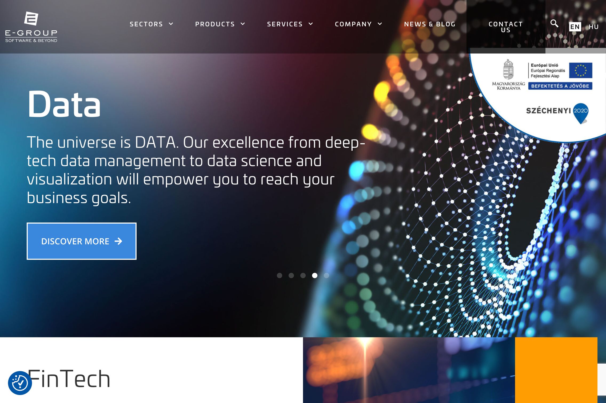
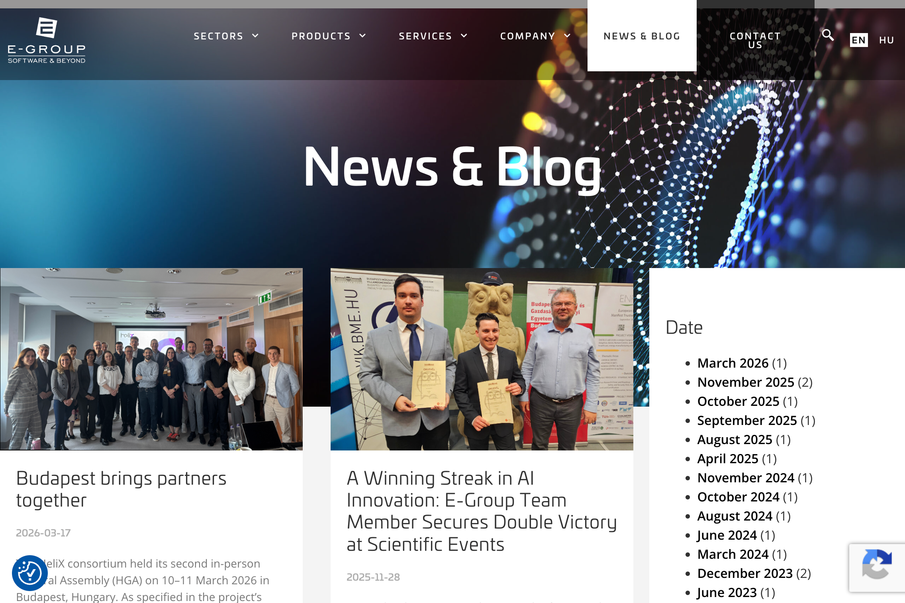

A Company Doing Big Things Nobody Knows About
Every great product starts with a real problem. Not a problem someone invented in a boardroom, but a problem that is sitting right in front of you, obvious and painful, that nobody has properly solved yet.
This is the story of how Rise started — and why we're documenting every step of building it in public.
The Brief
Chris Hoar was brought in to solve a specific problem for eGroup — a Budapest-based technology company founded in 1993 that works at the cutting edge of FinTech, HealthTech, GovTech, SpaceTech and EnergyTech. 110 staff. Serious clients. Serious work. An MoU signed in September 2025 to build a Sovereign AI Ecosystem with an Indian technology partner. EU cloud infrastructure projects. Medical AI research winning competition after competition.
And a website that still had a 2022 conference registration as its most prominent piece of content.
eGroup asked staff to create content. Staff didn't create content. The website stayed stale. The LinkedIn page had modest activity. The gap between what eGroup actually does and what the world could see kept growing — quietly, invisibly, expensively.
The ask wasn't just "fix our content strategy." The ask was: build something that makes this problem structurally impossible. Not a policy. Not a process. A product.
The Audit — What We Found
Before building anything, we looked at exactly where eGroup stood on Day 1. Here's what the audit revealed:
The Website



The New Site — Day 1


Side by Side — The Gap
-
Homepage hero still promoting a February 2022 expo. "Register NOW" for an event that happened over three years ago. The most prominent piece of dynamic content on the site is three years out of date.
-
Built on WordPress — standard template. Nothing custom, nothing distinctive. Any visitor who has seen a corporate WordPress site has essentially already seen this one.
-
Generic corporate messaging. "We shape the future of FinTech, HealthTech, GovTech, EnergyTech and SpaceTech innovation with excellence in TRUST, XCHANGE and DATA." This could describe a hundred companies. It describes none of them compellingly.
-
No human presence. No faces, no voices, no stories. A company of 110 people doing genuinely interesting work — and none of them exist on the website.
-
Blog exists but barely. The News & Blog section does have some recent activity — but posts are sporadic, months apart, with no consistent rhythm or strategy. There is no voice, no theme, no editorial direction. Content happens by accident, not by design.
-
The underlying company is genuinely impressive. EU DOME project participation. Medical AI research wins. Sovereign AI ecosystem MoU with Kellton (September 2025). Hungary's national digital identity infrastructure. Post-quantum encryption work. The story is there — it's just not being told.
-
LinkedIn shows they can communicate. Over 1,000 followers and some genuine activity. Proof that the capability to tell the story exists within the organisation — it just isn't being captured systematically.
The Core Insight
The problem isn't that eGroup staff don't create content. They do. Every day. They take photos at conferences. They have conversations about breakthrough research. They attend events, win awards, sign partnerships, present at panels. They just don't call any of it "content" — and nobody is capturing it.
The friction in content creation isn't writing — it's the gap between doing something and telling people you did it. If you close that gap to 1-2 taps on a phone, content creation becomes effortless. And if AI does everything after that, the problem is solved structurally — not behaviourally.
This is the insight that became Rise. Not "how do we make it easier to write blog posts" but "how do we make it so nobody ever has to write a blog post again, while still getting better content than they'd ever produce manually."
The Decision: Build a Product, Not a Fix
At this point, the conventional approach would be to hire a content manager, build an editorial calendar, run a training session, and hope for the best. We didn't take that approach.
Instead, the decision was made to build a product. An autonomous content intelligence platform that would:
And critically: eGroup's current website would be completely replaced. Not patched. Not updated. Replaced — with a new site built headless and API-first, designed from day one to be owned and operated by Rise. Rise doesn't post to the website. Rise IS the website's brain.
The Strategic Context
Here's the part that makes this more than just a client project: Rise is being built for eGroup, but it is being architected as a product from day one. Every decision — multi-tenancy readiness, plugin-based platform expansion, configurable brand engines, sovereign deployment — is being made with one eye on what Rise needs to be to sell to other enterprises.
eGroup is not just a client. eGroup is the pilot. The live case study. The before-and-after that will be the centrepiece of Rise's go-to-market story. Which is exactly why we're documenting this journey in a journal that anyone — including potential future customers — can read.
The most powerful sales tool for an enterprise product isn't a features list or a pricing page. It's proof. Real results, in a real organisation, documented in real time. This journal is that proof — being built entry by entry as Rise is built build by build.
What Happens Next
With the problem defined and the product scope agreed, the build begins. The next entry in this journal will document the full product definition — the complete architecture of Rise, every feature, every decision, and the reasoning behind each one.
After that, the new eGroup website starts to take shape. And after that, the first submission goes live — and we'll document exactly what Rise does with it.